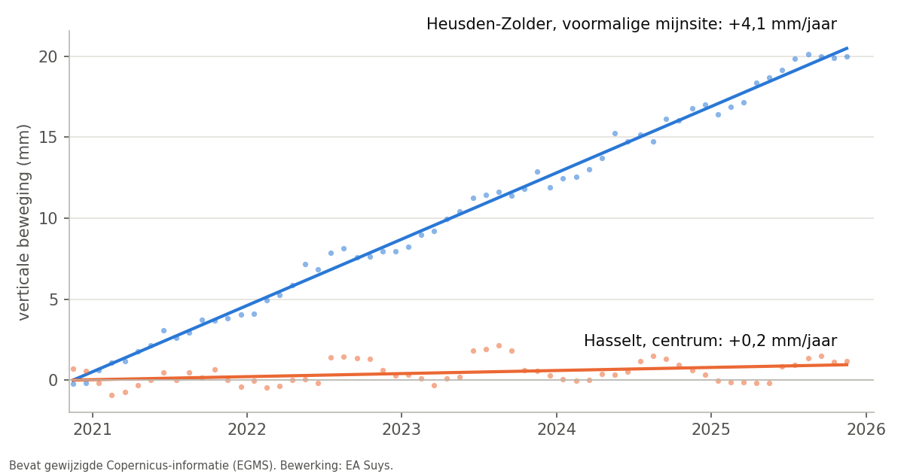

Beweegt uw gebouw? Satellieten meten het al sinds 2020
Scheuren in een gevel, werken bij de buren, een oude zetting in een kerk: telkens komt dezelfde vraag terug. Is er nu iets in beweging, of is het oud zeer? Met Europese satellietmetingen kunnen we daar vaak een antwoord op geven, nog vóór er een meetbout geplaatst is.
Millimeters vanuit de ruimte
De Sentinel-1-satellieten van het Europese Copernicus-programma scannen Europa met radar, om de week of twee. De European Ground Motion Service (EGMS) zet die opnames om in tijdreeksen: voor miljoenen vaste punten, zoals daken, gevels en verharding, staat hoeveel ze sinds december 2020 bewogen hebben, tot op de millimeter.
Wij selecteren de punten op en rond het gebouw, combineren de opnames vanuit verschillende kijkrichtingen tot een verticale beweging, en vergelijken het gebouw met zijn straat en zijn omgeving. Net dat verschil is interessant: een hele wijk die gelijkmatig zakt of rijst, doet een gebouw weinig. Een gebouw dat anders beweegt dan zijn buren, verdient aandacht.
Een voorbeeld: het Limburgse mijnbekken
Sinds de steenkoolmijnen dicht zijn, wordt er geen mijnwater meer weggepompt. Het water stijgt opnieuw en de bodem rijst mee. Dat is goed gedocumenteerd in wetenschappelijk onderzoek (Declercq e.a., 2023), en dus een goede toets voor onze analyse.
- Heusden-Zolder, voormalige mijnsite: de bodem stijgt ongeveer 4 mm per jaar, zo'n 2 cm in vijf jaar, gelijkmatig.
- Beringen, Maasmechelen en Genk (C-Mine): 2 tot 3 mm per jaar.
- Hasselt centrum, ten zuiden van het mijnbekken: 0,2 mm per jaar, praktisch stabiel.
De metingen vanuit verschillende kijkrichtingen geven hetzelfde beeld, en het patroon klopt met het gepubliceerde onderzoek.

Wat de metingen tonen, en wat niet
- Per straat of per groot gebouw: een rijwoning krijgt doorgaans maar een handvol meetpunten. Een stuk straat van 50 m telt er al gauw 50 of meer, een kerk of een hal tientallen. Het betrouwbare antwoord ligt dus op het niveau van de straat of van een groot gebouw.
- Nauwkeurigheid: de trend van een straat of een groot gebouw kennen we tot op enkele tienden van een millimeter per jaar. Wanneer de kijkrichtingen onderling verschillen, rekenen we met een ruimere foutmarge.
- Geen vervanging van metingen ter plaatse: de punten liggen vooral op daken en gevels, niet op de fundering. De reeks loopt nu van december 2020 tot november 2025. Een plaatsbeschrijving of een monitoring tijdens werken blijft nodig.
Wat betekent dit voor uw project?
- Vóór werken in de buurt: een gedocumenteerde nulmeting. Bewoog het gebouw of de straat al vóór de werken begonnen?
- Scheuren in een bestaand gebouw of erfgoed: is de beweging nog actief, of gaat het om een oude zetting?
- Renovatie of herbestemming: beweegt het gebouw anders dan zijn omgeving?
We nemen deze controle op in onze stabiliteitsstudies. Vragen over een concreet gebouw? Mail naar info@easuys.be.